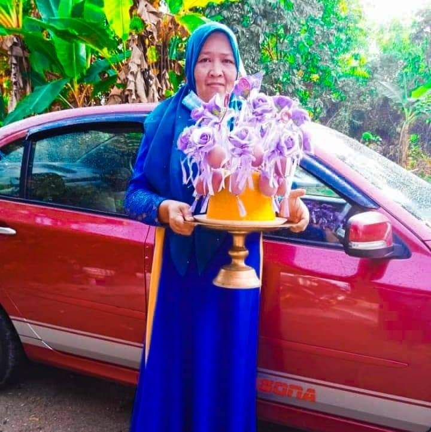
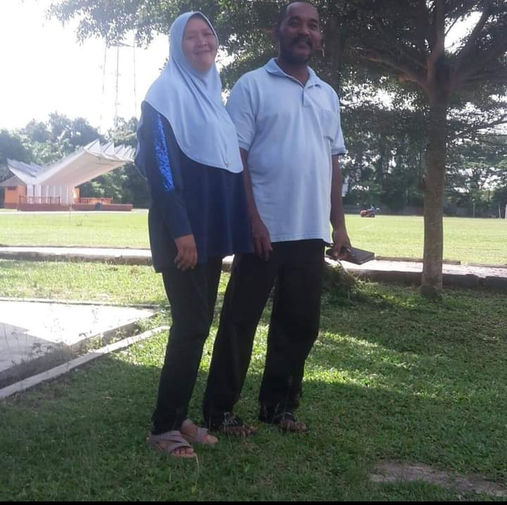

F A M I L Y
MY BELOVED FAMILY <3
MY ONE AND ONLY MOM
HOLLA! this is my beloved mom. Her name is NORISAH BINTI HAMZAH 45 years old. My mother is a housewife, and she is now obsessed with planting flowers in the back yard HAHAHA. I can't express how much I adore her. Someone who encouraged me and became a friend to whom I could communicate my thoughts when I was sad or happy. My mum is also my best buddy. I shall remember the affection that was shown to me till the day I die. My mother never harmed us or even pinched us when she was upset. My mother was so burdened by life that I couldn't bear to see her.I am dedicated to offer my mother success in whatever career I choose, regardless of the challenges that may arise. MAAA, I love you.
BEST DAD EVER
This is my dad but i call him as "ABAH" Zulkpli Bin Muhd Yusoff, age 54, is his name. Yes, that's how his name is spelled. HAHAHA, let's blame it on my grandfather. Okay, let me tell you a little bit about my Abah. When treating somebody, he is very gentle. Someone who is really strong and works incredibly hard to protect our family. People who don't understand the distinction of exhausted and tired. My father would drive the family to work in the morning and then to our goat field in the evening. My father will take care of our 40 goats. At noon, I'll also help feed the goats. I can't imagine my life without this person, a person who supports me a lot even in silence. The love given to us siblings is very deep and his love story with my mother is one of the most romantic stories for me. I hope that when I meet my life partner, he is exactly like my father. Thank You Abah For Everything. I LOVE YOU 3000
MY SIBLINGS
| PICTURE | AGE | NAME AND DESCRIBE |
|---|---|---|
| 24 | ABE LONGBased on the picture, my brother is the tall one. His name is MUHAMMAD FARIZ BIN ZULKPLI. He is a wonderful brother. His attitude is similar as that of my father. In compared to the others, he is the closest to me. He's not married yet and now a civil engineer in Selangor. I'm always asking for money from him HAHAHA |
|
 |
23 | KAK NGAHThis is my only oldest sister that i had, her name is IYKA MAYSARAH BINTI ZULKPLI.My only oldest older sister that i had. She's seriously annoying. We had an urge every day, everywhere, and in everything LOL, typical sibling. But she is kind and has always bought me items from online shopping platforms, which is why I like her. JUST A LITTLE AND NOT MORE. She had her own mini market at Jerteh, Terengganu. She is someone's fiancee, and she is getting married next year. |
| 20 | KAK CHIKThis me,FARA WAHIDA BINTI ZULKPLI. The middle child in this family and the cutest one haha. Although I am not the youngest, I am the most spoiled, so my parents must accompany me everywhere because I am too afraid to go out without them unless I am at school or UiTM. Yeah my parents is my buddies. |
|
| 14 | KAKAKThis girl's name is NUR ALEESA IRDINA BINTI ZULKPLI. My younger sister attends Sekolah Menengah Kebangsaan Sungai Petai in Pasir Puteh. He is the most strong sibling who sulks for no explicable reason. She's who always spends her sisters' and brothers' money, but she is very diligent in helping other siblings by washing shoes, ironing clothes, and doing many other things. |
|
| 7 | ADIK/ABANGMy cute brother's name is MUHAMMAD AMIRUL AIMAN BINTI ZULKPLI My younger brother goes to school. Because we have long desired the presence of a younger brother, my younger brother is the most precious diamond in our lives. We will try to satisfy all of his wishes. He is quite clever, and he frequently asks questions that are tough to answer LOL. The most fearful child in my family, even going to the toilet needs a friend. |
|
 |
1 | ADIKThis is my younger brother, named MUHAMMAD HARRAZ RIZQI BIN ZULKPLI. My younger brother died when he was four months old in 2021. He passed away as a result due brain bleeding, and the doctor told us that even if my brothe survived, she would be paralyzed all over. Our family's life was terrible at the time, and my parents had to go back and forth from Pasir Puteh to USM Hospital Kubang Kerian, Kelantan, whenever the doctor called. Because of the presence of the PKK in Malaysia at the time, the other siblings were not allowed to leave. We only saw our brothe after he passed away. When it is revealed that he has been safely born into this world, his very presence is enough to make us happy. Thank you for the lovely memories. |